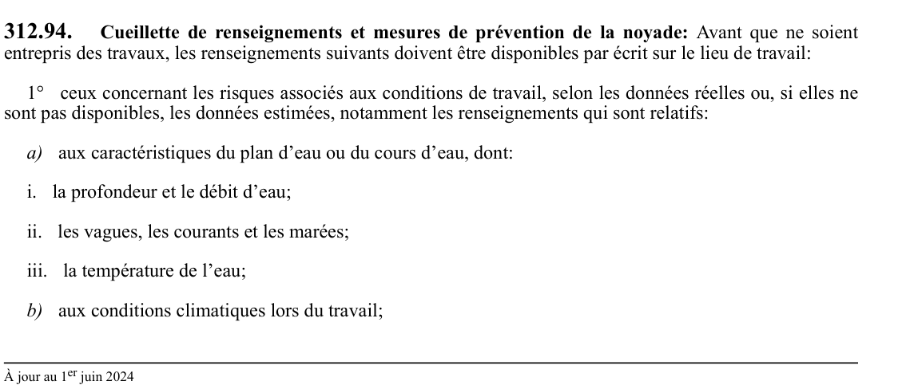

art-312.94-RSST : cueillette de renseignements et mesures de prévention de
Cueillette de renseignements et mesures de prévention de la noyade: Avant que ne soient entrepris des travaux, les renseignements suivants doivent être disponibles par écrit sur le lieu de travail: 1° ceux concernant les risques associés aux conditions de travail, selon les données réelles ou, si elles ne sont pas disponibles, les données estimées,...
🌐 LegisQuébec · 📄 PDF officiel
Texte officiel
Cueillette de renseignements et mesures de prévention de la noyade: Avant que ne soient entrepris des travaux, les renseignements suivants doivent être disponibles par écrit sur le lieu de travail:
1° ceux concernant les risques associés aux conditions de travail, selon les données réelles ou, si elles ne sont pas disponibles, les données estimées, notamment les renseignements qui sont relatifs:
a) aux caractéristiques du plan d’eau ou du cours d’eau, dont:
i. la profondeur et le débit d’eau;
ii. les vagues, les courants et les marées;
iii. la température de l’eau;
b) aux conditions climatiques lors du travail;
c) aux caractéristiques des postes de travail et des voies de circulation, dont:
i. l’état de la surface en bordure de l’eau et la pente pour y accéder;
ii. le transport ou le déplacement sur l’eau;
d) aux équipements, aux méthodes de travail et à la localisation du site, incluant les moyens de communication;
e) aux vêtements et aux équipements devant être portés pour exécuter le travail.
2° les moyens de prévention à prendre pour protéger la santé et assurer la sécurité et l’intégrité physique des travailleurs, et plus particulièrement ceux concernant:
a) les moyens de prévention de la noyade conformément à l’article 312.96;
b) les moyens de sauvetage dans le plan de sauvetage prévu à l’article 312.98 et le délai d’intervention pour récupérer une personne tombée à l’eau.
Les renseignements visés aux paragraphes 1 et 2 du premier alinéa doivent être déterminés par une personne qualifiée.
Aux fins du présent article, une personne qualifiée s’entend d’une personne qui, en raison de ses connaissances, de sa formation ou de son expérience, est en mesure d’identifier, d’évaluer et de contrôler les risques de noyade.
Texte de l’article 312.94 RSST, extrait de la couche texte du PDF officiel (page 108), sans OCR ni retouche. La capture ci-dessous et le PDF font foi.
{kind=link}

Toucher l'image pour l'agrandir🔗 Voir art. 312.94 RSST dans le PDF (page 108) · texte à jour au 1er juin 2024
📚 Source légale : D. 1223-2021, a. 2. · LégisQuébec
Voir aussi
Pages qui pointent ici (4)
- art-312.93-RSST : travail à risque de noyade Recueil législatif
- art-312.95-RSST : information des travailleurs préalablement à l'exécution d'un travail Recueil législatif
- art-312.97-RSST : attributs du vêtement de flottaison individuel ou du Recueil législatif
- RSST : Section 26 : Travail dans un espace clos Recueil législatif